0.314677

0.337874
0.397890

0.410180

0.418236

0.457245
0.461041
0.469936
0.475389
0.494828
| Target image | 0.314677 | 0.337874 | 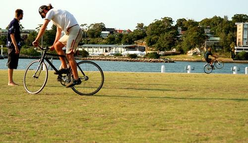 0.397890 | 0.410180 | 0.418236 | 0.457245 | 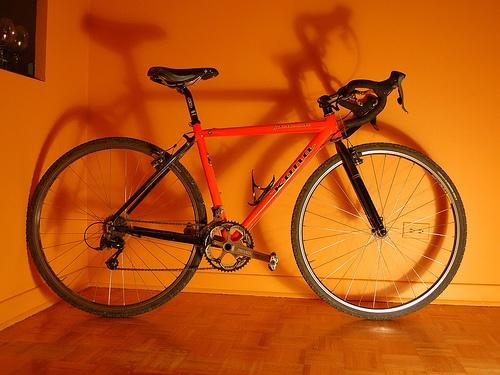 0.461041 | 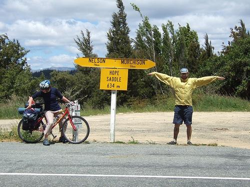 0.469936 | 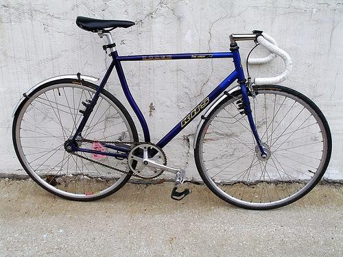 0.475389 | 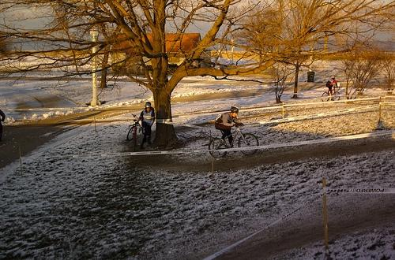 0.494828 |
| Target image 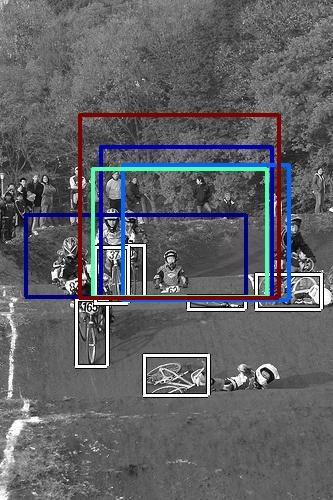 |  1200.972290 | 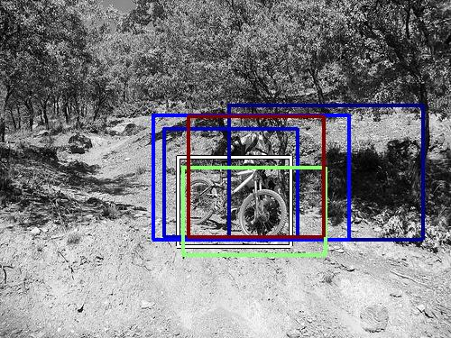 1197.501465 |  1136.669312 |  1027.071045 | 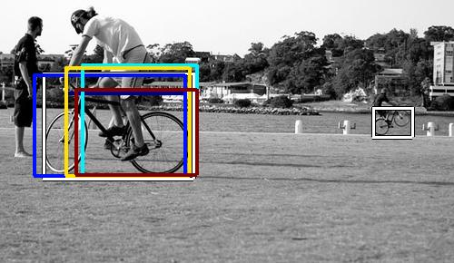 993.247253 | 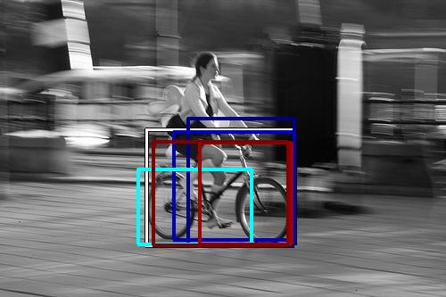 990.641724 |  958.417175 | 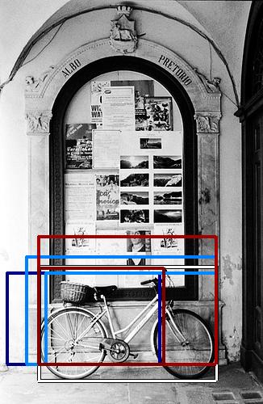 951.807068 | 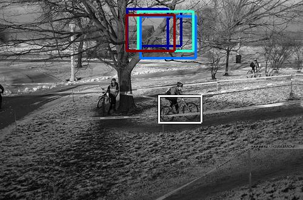 927.460327 | 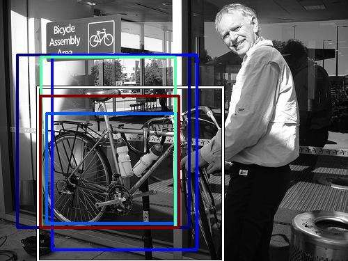 924.185059 |
| Target image 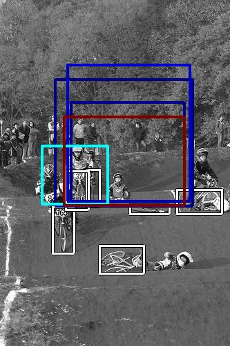 | 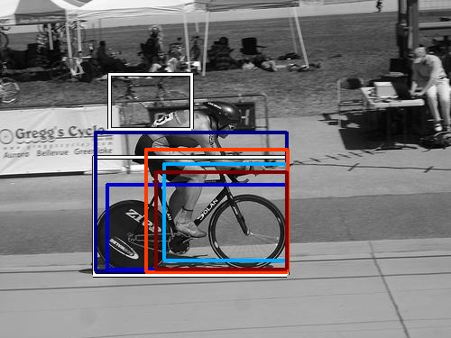 1491.376831 | 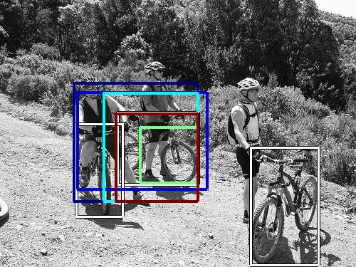 1210.468262 |  1175.795166 |  1099.829224 | 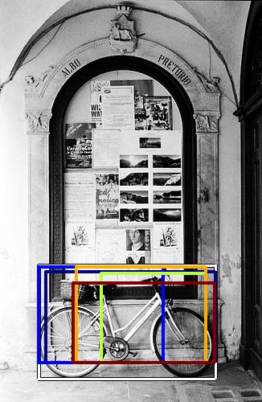 992.765564 |  915.834290 | 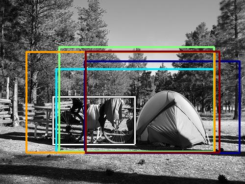 893.511597 |  888.710510 | 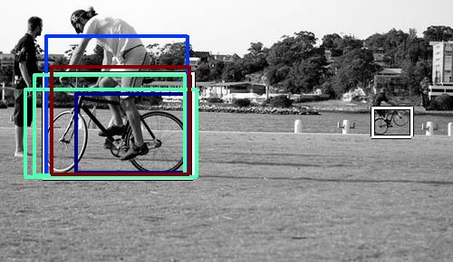 869.113708 | 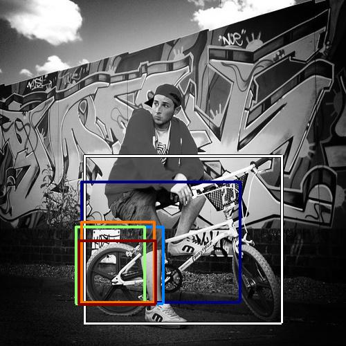 828.301697 |
| Target image 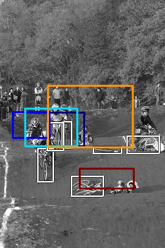 | 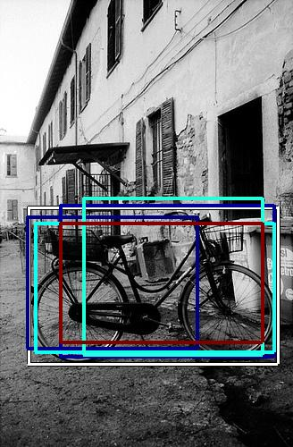 2919.695557 |  2435.816162 | 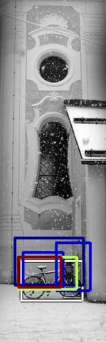 2098.294189 |  1794.718750 | 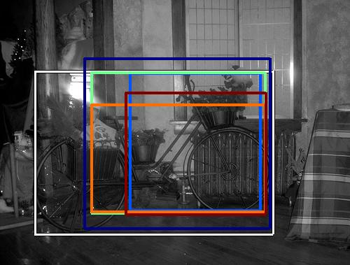 1753.201538 |  1685.922607 | 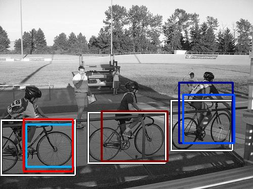 1684.559326 |  1514.887939 | 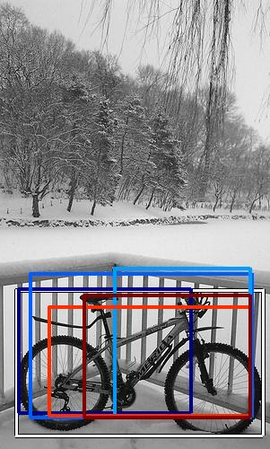 1406.644287 |  1387.560913 |
| Target image 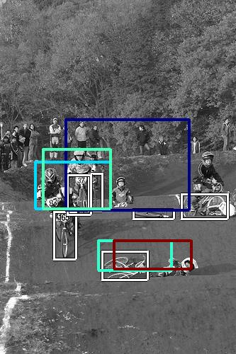 | 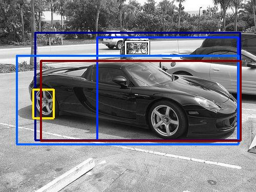 6704.292969 | 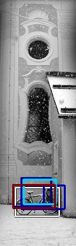 3928.820801 |  2443.331055 | 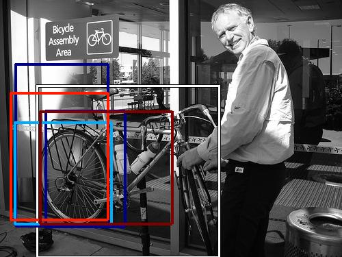 2347.525879 | 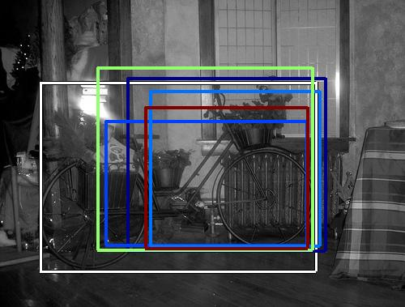 1847.132812 | 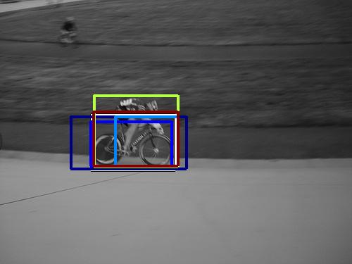 1796.763916 | 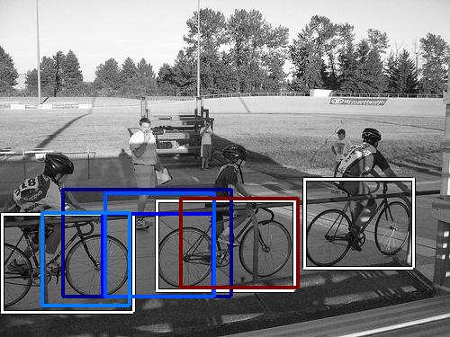 1772.977295 |  1713.076538 |  1542.151855 | 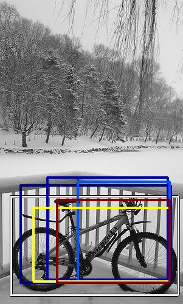 1370.750977 |